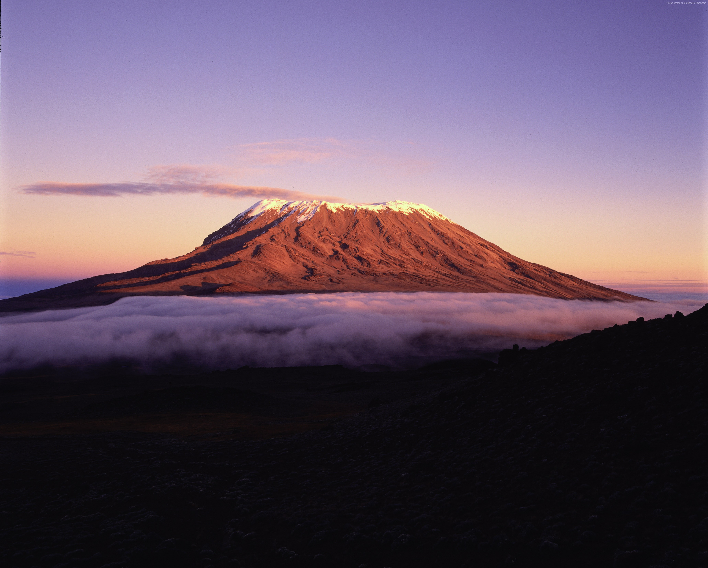
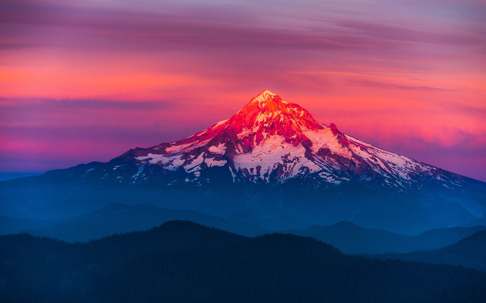
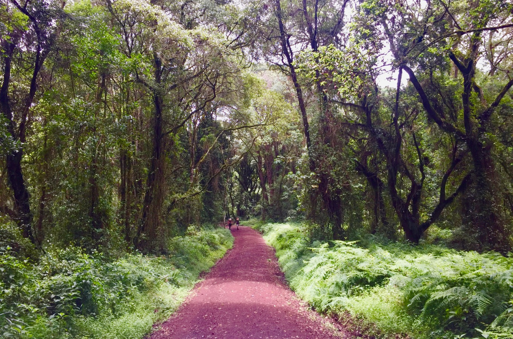
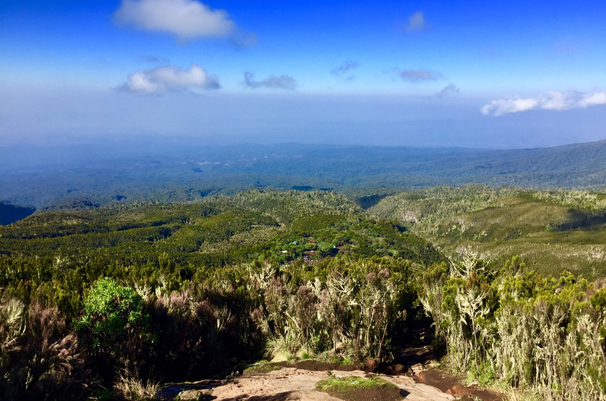
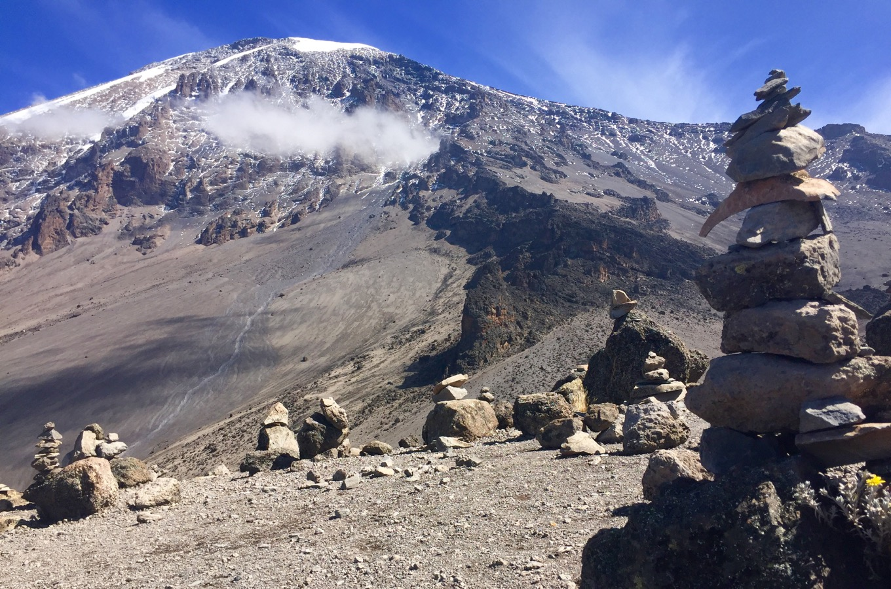
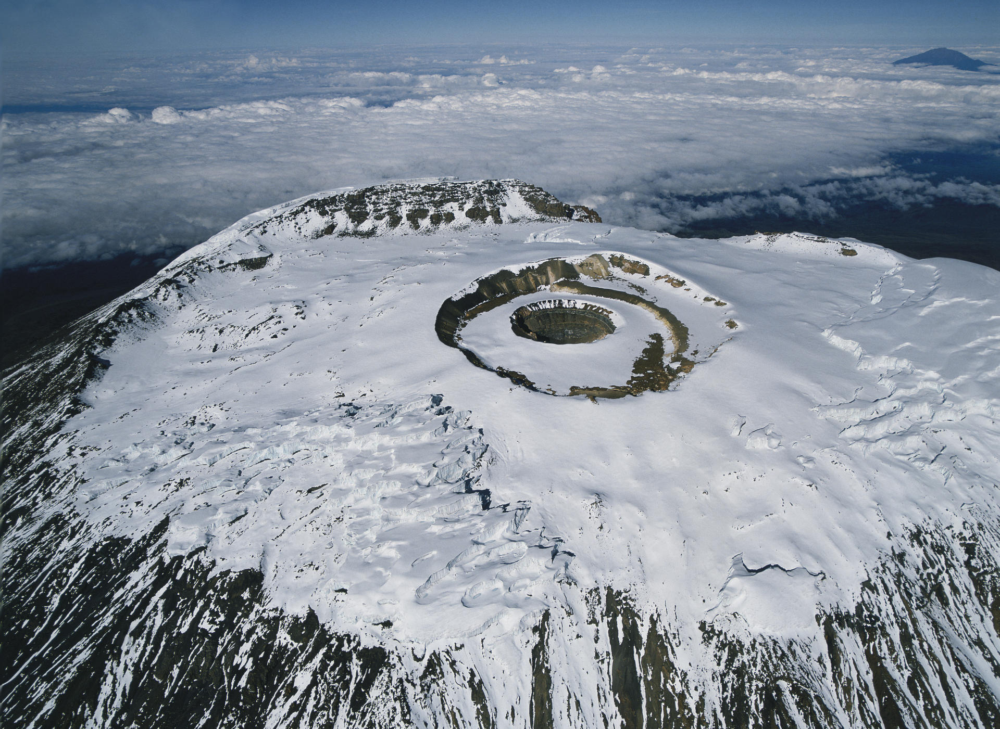
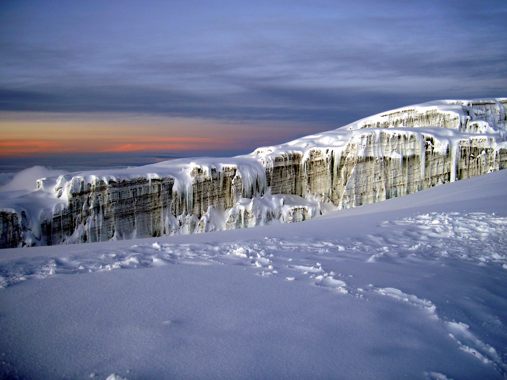

Mont Kilimandjaro:Le mythique toit de l'Afrique


Un lieu unique au monde
Le Parc national du Kilimandjaro, d'une superficie d'environ 75 575 ha, abrite le plus grand massif volcanique isolé du monde et la plus haute montagne d'Afrique, qui élève ses 4 8777 m au-dessus des plaines avoisinantes pour atteindre 5 895 m à son sommet.
Avec sa cime enneigée, le Kilimandjaro constitue un phénomène naturel exceptionnel par sa situation isolée au-dessus des plaines voisines donnant sur la savane.
Mont Kilimandjaro est l'un des plus grands volcans du monde. Il comporte trois principaux pics volcaniques - le Kibo, le Mawenzi et le Shira.
Avec son sommet enneigé et ses glaciers, c'est la plus haute montagne d'Afrique. Ses pentes présentent cinq zones de végétation : basses plaines, forêt de montagne, lande d'altitude, désert alpin et sommet. Toute la montagne, y compris la ceinture de forêt de montagne, abrite de nombreuses espèces, en particulier des mammifères, dont beaucoup d'espèces menacées.
C'est pour toutes ces caractéristiques, mais surtout pour son altitude, sa forme physique, sa cime enneigée et son isolement dominant les plaines des alentours que le Mont Kilimandjaro est considéré comme un exemple exceptionnel de phénomène naturel remarquable.
Les différentes étapes de l'ascension du Kilimandjaro

La forêt de montagne
Il y a plusieurs portes au travers desquelles vous pouvez entrer dans le Parc National du Kilimandjaro. Les portes Machame ainsi que Mweka et Marangu sont situées à une altitude d'environ 1 800 à 3 000 mètres. Ainsi, votre randonnée commence dans une végétation de type « forêt tropicale de montagne ».
Vous marchez sur les chemins à travers le vert luxuriant. De temps en temps vous croiserez des groupes de singes, essayant de se frayer un chemin à travers la « voûte de feuilles ».
L'atmosphère est humide, entre 20 et 25 ° C, et les pluies occasionnelles sont fréquentes, surtout dans l'après-midi.

Les landes
Quelques heures et quelques courtes pauses plus tard, la forêt équatoriale, qui est épaisse jusqu'à ce moment-là, commence à s'éclaircir. À près de 3 000 mètres d'altitude, vous arrivez au début des landes. Des arbres plus courts ainsi qu'un nombre croissant de fougères et de mousses sont typiques de ce type de végétation.
De plus, il fait un peu plus froid, entre 15 et 20 ° C lorsque vous atteignez votre premier camp.

Le désert alpin
Déjà dans les landes, mais au plus tard dans le désert de pierre, vous avez des vues impressionnantes. Vous êtes maintenant arrivé à une altitude d'environ 4 000 mètres. La montée est la plupart du temps moins raide qu'avant, et vous marchez sur des chemins à travers des étendues apparemment sans fin et des champs de cailloux vers Kibo et Uhuru Peak. La végétation dans le désert de pierre est assez aride.
Cependant, à la frontière des landes vous voyez des espèces végétales uniques telles que les séneçons géants (dendrosenecio kilimanjari), un type de plante qui peut vivre des centaines d'années.


Le spectacle étonnant des glaciers sous l'équateur
La présence de neige sous des lattitudes proches de l'équateur est bien averée et confère au Kilimandjaro sa dimension mythique.
Au milieu de la savane africaine, trône ainsi ce massif volcanique imposant et solitaire, auréolé de ses neiges éternelles étincelantes
Des glaciers cantaonnés au Kibo surmontent en effet la montagne. On en dénombre douze, qui s'étendent le long de ses versants. Ils offrent un contraste saisissant entre la pâleur de leurs blocs et l'opacité de la lave figée.
A cet endroit du globe, le rayonnement des ultravioletsfrappe la surface terrestre en ligne directe. Les zones de glace fondent ainsi verticalement, et sculptent les glaciers de manière très étrange. Leur aspect acéré très caractéristique ferait presque penser à une œuvre cubiste.